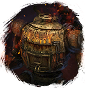

Открыть в интерактивной вики →
| Уровень | 105 |
|---|---|
| Сила (PvE) | 5535 |
| Аспект арены | Gherudu |
| Здоровье | 58 000 |
| Мана | 6000 |
| Выносливость | 12 000 |
Дроп

Статистика
 |  |  | |||
| Уровень: 85 | Уровень: 105 | Уровень: 135 | |||
Здоровье: 26 000 Мана: 6 000 Выносливость: 12 000 | Здоровье: 52 000 Мана: 6 000 Выносливость: 12 000 | Здоровье: 104 000 Мана: 6 000 Выносливость: 12 000 |
Умения
| Таран Укус Мощный Удар | Бросок камнем Групповая дальняя атака |
Команда
-
Локация
Зал Конструкта V2
Иммунитеты / особые умения
Устойчивость к кровотечению
Вариант 2: Описание

Вариант 2: Статистика
| | | | |||
| Уровень: 95 | Уровень: 115 | Уровень: 145 | |||
Здоровье: 29 500 Мана: 9 000 Выносливость: 14 000 | Здоровье: 58 000 Мана: 9 000 Выносливость: 14 000 | Здоровье: 116 000 Мана: 9 000 Выносливость: 14 000 |
Вариант 2: Зоны атаки
Вариант 2: Умения
| Таран Групповая физическая атака Мощный Удар Обычная атака Фронтальный Удар Повреждение брони Ранящий удар | Огненная сфера Разрыв корней |
Вариант 2: Команда
-
Вариант 2: Локация
Зал Конструкта V2
Вариант 2: Иммунитеты / особые умения
Устойчивость к кровотечению
Вариант 2: Дроп
| Рары | Синергетики | Эпики | |||
 | | | |||
Прочее:  Диэлектрик Диэлектрик | |||||
Вариант 3: Описание

Вариант 3: Статистика
| | | | |||
| Уровень: 100 | Уровень: 120 | Уровень: 150 | |||
Здоровье: 16 000 Мана: 18 000 Выносливость: 7 000 | Здоровье: 32 000 Мана: 18 000 Выносливость: 7 000 | Здоровье: 64 000 Мана: 18 000 Выносливость: 7 000 |
Вариант 3: Зоны атаки
Вариант 3: Умения
| Поджог Фронтальный Удар Таран | Энергетический разряд Шаровая молния Стратегический выстрел Бросок камнем | Огненная сфера Энергетическое шило Групповое оглушение |
Вариант 3: Команда
-
Вариант 3: Локация
Зал Конструкта V2
Вариант 3: Иммунитеты / особые умения
Устойчивость к кровотечению
Вариант 3: Дроп
| Рары | Синергетики | Эпики | |||
 Рары Рары Рары Рары Рары Рары | 30-70 ур. |  Эпики Эпики | |||
Прочее:  Элементарный глиф Элементарный глиф  Глиф Подмастерья Глиф Подмастерья  Путь тревоги Диэлектрик Путь тревоги Диэлектрик | |||||